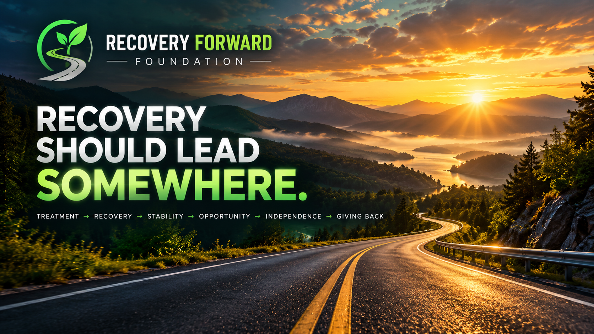

- Housing deposits and housing stability
- Transportation and vehicle-related expenses
- Employment tools, uniforms, and work-related needs
- Education and vocational training
- Identification documents and essential household items
- Other approved recovery-stability needs

OUR PURPOSE
Recovery Should Lead Somewhere.
Recovery Forward Foundation is being established to help people move from recovery into long-term stability, independence, and productive participation in their communities. Recovery is not simply the completion of treatment. Our purpose is to help bridge the gap between treatment and sustainable independence.
Our Mission
Recovery Forward Foundation exists to help individuals build stable and independent lives following substance-use recovery by connecting verified recovery milestones with practical assistance, opportunity, and long-term community support.
Our Vision
Treatment → Recovery → Stability → Opportunity → Independence → Giving Back
The Six-Month Recovery Milestone
Our proposed flagship program centers on six months of qualifying recovery progress. Participants who satisfy independently verified milestones and other program requirements may become eligible for assistance, subject to funding and approval.
What Assistance May Cover
How the Proposed Program Works
- Referral or application
- Registration
- Recovery milestone pending
- Independent verification
- Eligibility review
- Grant application and review
- Approval or decline
- Assistance when approved and funded
- Financial recordkeeping and audit
Privacy and Accountability
The Foundation intends to protect participant dignity through minimal information collection, randomized participant identifiers, independent verification, separation of financial responsibilities, and documented oversight.
Personal recovery or medical information should not be published on public websites or blockchains.
Our Development Roadmap
- Nonprofit formation and governance
- Program and eligibility policy development
- Community and recovery partnerships
- Fundraising and donor relationships
- Controlled pilot program
- Measured expansion into additional communities
Our Founding Purpose
Recovery deserves more than congratulations. It deserves a pathway forward.
The goal is to help people build a life worth protecting after recovery.
This page describes the Foundation's founding vision and proposed programs. Eligibility criteria, funding, verification procedures, and assistance offerings remain subject to formal adoption and availability. Registration does not guarantee a grant.